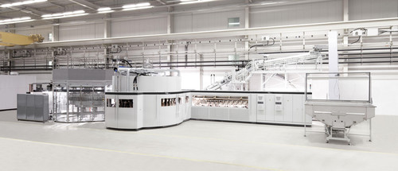

Vertrieb ist überall
Vertrieb, Marketing, Employer Branding finden immer statt
Wieder einmal habe ich ein schönes Beispiel erlebt, dass Vertrieb, Marketing oder Employer Branding mitnichten Sache nur allein der Vertriebs- oder Marketingabteilung sind. Und es erstaunt mich immer wieder, dass Unternehmen häufig aber genauso agieren. Naja und mal ehrlich, oft geben sich auch beide Abteilungen selbst diesen Anschein. Ganz abgesehen davon, dass häufig jede der beiden für sich beansprucht, die wichtigste Rolle im Verkauf oder der Außendarstellung zu spielen.
Immer wieder fällt mir dabei auf, dass viele Unternehmen überhaupt nicht auf dem Zettel haben, dass es unzählige Vertriebskanäle im Unternehmen gibt, die vielleicht nicht so offensichtlich, da indirekt, aber wirksam sind. Genauso verhält es sich mit dem Thema Employer Branding, wo seitens der Marketing Abteilung viele aufwendige Maßnahmen ergriffen, aber oft die Basics übersehen werden.
Vorbild für Vertrieb und Employer Branding
Ich fange mal mit einem ausgesprochen positiven Beispiel für „indirekten Vertrieb“ bzw. Employer Branding an. Ich war im Flugzeug nach Toronto unterwegs und bin mit dem Herrn neben mir ins Gespräch gekommen. Im Austausch über den Grund der Reise nach Kanada sind wir schnell bei unseren jeweiligen Jobs gelandet. Schon im Flugzeug hat mein Nachbar, Herr Eysel von der Firma, KHS Corpoplast, in der er schon seit vielen Jahren arbeitet, regelrecht geschwärmt. Und alles was er von dieser Firma erzählt hat, hat mich einfach neugierig gemacht.
Als Hamburgerin und selbst Unternehmerin bin ich immer daran interessiert, welche Firmen in und um Hamburg ansässig sind, was sie produzieren, mit wem sie kooperieren, welche Firmenkultur herrscht, wie sie Wirtschaft erleben, bewerten, was ihre Herausforderungen, Wünsche und Ängste für die Zukunft sind. Ich habe in den letzten Jahren kaum eine Chance ausgelassen, mir verschiedenste Unternehmen anzusehen und mit den Mitarbeitern zu sprechen. Insbesondere die Produktion in Unternehmen zu sehen fasziniert mich. Ich betrachte das als persönliche Weiterbildung und nutze gern die Angebote in HH, die Mitglieder von Mittelstandsverbänden oder auch die lange Nacht der Industrie bieten.
Zurück zu meinem Flugzeugnachbarn Herrn Eysel. Schon im Flugzeug hatten wir verabredet, dass Herr Eysel es möglich machen wird, mir einmal die Firma und Produktion zu zeigen. Einige Wochen später kam es zu dem Termin. Wir haben gemeinsam in der Kantine gegessen und anschließend hat Herr Eysel mich durch die Firma, insbesondere die Produktion geführt. Zum einen war ich wieder einmal begeistert vom deutschen Maschinenbau, aber auch davon, wie offen und nett Herr Eysel und alle Kollegen waren, mit denen ich sprechen konnte. Ich habe es sehr wertgeschätzt, dass er sich die Zeit genommen hat, obwohl ich nun wahrlich kein, noch nicht einmal potentieller Kunde für eine Streckblasmaschine für PET Flaschen bin. Kurz, alles was ich gehört und gesehen habe, hat bei mir einen sehr positiven Eindruck hinterlassen. Nun werden Sie sich vielleicht fragen, was daran ist Vertrieb, Marketing oder Employer Branding?

Ganz einfach: allein, dass ich im Internet positiv über die Firma schreibe, ohne dass ich darum gebeten oder gar bezahlt wurde, ist gut für deren Außendarstellung. Immer wieder mal in Gesprächen, bei meinem Kunden oder auf Veranstaltungen werde ich die Firma erwähnen, nur weil ich einfach begeistert war. Zugegeben, Kunden, die tatsächlich eine Streckblasmaschine für bis zu 80.000 Flaschen pro Stunde benötigen, gibt es nicht so viele, aber sie ahnen es, dafür potentielle neue Mitarbeiter, die heute allerorten gesucht werden. Ich bin sicher, nicht so viele Hamburger haben die Firma KHS Corpoplast, in Hamburg Meiendorf, mit Standorten auf der ganzen Welt, auf dem Zettel, wenn sie daran denken, sich jobmäßig zu verändern. Meine Erwähnung wird vielleicht den ein oder anderen auf der Homepage nachschauen lassen. Und die Tochter meines Freundes, die gerade eine n Ausbildungsplatz sucht, fand meine Erzählungen auch ganz spannend……Herr Eysel, hat mir zwar keine Maschine, aber „seine Firma verkauft“ und das „nur“ mit einem netten Gespräch, einem Kantinenessen und einer Führung.
Mitarbeiter und Geschäftspartner als Epfehlungsmarketer
Häufig erlebe ich aber, dass Firmen solche Chancen nicht nutzen:
- sie denken nicht daran, dass jeder Mitarbeiter, auch Auszubildende Verkäufer der Produkte und des Images sind
- sie übersehen, dass jeder Lieferant und Dienstleister potentiell Werbung für das Unternehmen oder eben genau das Gegenteil machen
Ich habe neulich mit einer Firma in Süddeutschland zusammengearbeitet und hatte dort die Gelegenheit mit einigen Auszubildenden zu sprechen. Diese haben sich beklagt, dass sie wie Kinder behandelt würden, z.B. keine eigenen Arbeitsplätze und Konten am Rechner bekämen, nicht das Büro betreten dürften, wenn kein andere Mitarbeiter da ist, an Abteilungsversammlungen nicht teilnehmen dürften……. Jedes Unternehmen heutzutage weiß, dass es nicht eben leicht ist, gute Auszubildende zu finden. Aber wenn man seine Auszubildenden an so kurzer Leine hält, muss man sich doch nicht wundern, dass sich immer weniger smarte junge Leute bewerben. Das spricht sich doch rum! Und junge Menschen sind heute besser vernetzt den je. Mal abgesehen von den Bewertungsportalen im Internet, wo solche Dinge ausgetauscht werden. Wäre es nicht sinnvoll, alle Mitarbeiter so zu behandeln, dass sie vor lauter Begeisterung „Empfehlungsmarketing“ auf jeder Ebene betreiben?
Negatives Empfehlungsmarketing
Ein weiteres Bilderbuchbeispiel für negatives Empfehlungsmarketing habe ich gerade selbst wieder erlebt. Eine Werbeagentur hat meine Dienstleistung gebucht. Der Chef und alle Mitarbeiter dort sind sehr nett, aber chaotisch. Naja, um das zu ändern haben sie mich ja gebucht:-). Der Chef hatte schon mal erwähnt, dass es vielleicht auch für andere Kunden von mir interessant sein könnte, von seiner Agentur betreut zu werden. Nach unserem ersten Termin konnte ich mir auch gut vorstellen, die Agentur zu empfehlen. Aber das hat sich im Laufe unserer Zusammenarbeit schnell geändert. E-Mails wurden mit großer Verspätung oder gar nicht beantwortet, Termine kurzfristig abgesagt.
Auch wenn ich in diesem Falle der Dienstleister war/bin, habe ich die Ansicht, dass man mit Geschäftspartnern, egal auf welcher Seite, so nicht umgeht. Ich nehm’ das nicht persönlich, aber ein solches Verhalten hat natürlich zur Folge, dass ich die Agentur keinem meiner Kunden guten Gewissens empfehlen kann. Und es passierte kurz darauf tatsächlich, dass ein Kunde mich nach einer Empfehlung für mehrere neue Webseiten im Wert von ca. 20.000 Euro gefragt hat. Ich habe dann eine andere Agentur empfohlen, deren verlässliche, respektvolle und damit wertschätzende Zusammenarbeit ich sehr schätze.
Normaler Alltag- unterschätze Quelle für Empfehlungen
Ich habe als selbständige Unternehmerin auch schon immer wieder mal erlebt, dass ich Kunden über Empfehlungen bekommen habe, wo ich gar nicht damit gerechnet habe, bzw. mir gar nicht bewusst war, irgendwie Marketing gemacht zu haben:
- eine meiner Kundinnen war zur Kur und hat einer Mitpatientin von mir erzählt, diese ihrem Vater, der mich später gebucht hat
- ich habe im Urlaub ein nettes Pärchen kennengelernt und wir haben eigentlich nur privat gesprochen, aber die Frau hatte eine Freundin die Unterstützung bei der Büroorganisation brauchte und mich gebucht hat
- ich habe in einem Laden an der Kasse meinen Firmennamen gesagt und ein nettes Gespräch mit dem Kassierer gehabt, die Frau hinter mir an der Kasse hat sich den Firmennamen gemerkt und mich angerufen und gebucht, weil sie mich sympathisch fand
Mein Fazit: Vertrieb und Marketing findet ständig statt, rund um die Uhr von jedem Mitarbeiter. Das ist eine große Chance, die man als Unternehmen, Selbständiger oder Freiberufler nicht verstreichen lassen sollte. Dabei geht es nicht darum, die eigenen Produkte oder Fähigkeiten besonders anzupreisen, sondern einfach nett, offen, wertschätzend und ehrlich und verbindlich mit anderen Menschen umzugehen. Und Freude über ein positives Erlebnis im eigenen Unternehmen oder mit Geschäftspartnern zu teilen, kommt immer gut an und bleibt in positiver Erinnerung.
Weitere Artikel

Digitale Visitenkarten
Auch wenn analoge Visitenkarten schön sein können, wenn Sie hochwertig sind, erweisen sie sich nicht mehr wirklich als praxistauglich. Rein digitale Visitenkarten mit QR Code, deren hinterlegte Informationen man schnell ändern …

App-Experten fragen: Der Digitalisierungsfalle entkommen
Ask the App Experts (AtAE) ist der Ausbruch aus der Digitalisierungsfalle. Mit AtAE bekommen Ihre Mitarbeitenden Antworten auf ihre persönlichen Software-Fragen bezüglich ihrer individuellen Probleme. „Software is eating the …